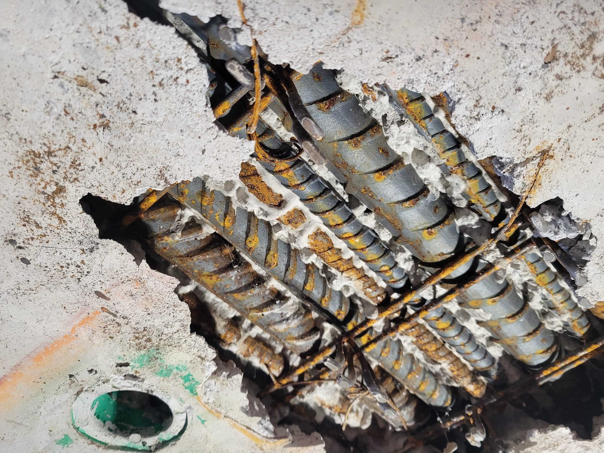

Why transfer slabs demand special attention
Transfer slabs carry concentrated column and wall loads while redirecting them to a different support arrangement below. Their depth and reinforcement congestion can make concrete placement, vibration, inspection and repair unusually difficult.
Observed indicators
- Concrete delamination and spalling.
- Exposed and corroded reinforcement.
- Loss of protective concrete cover.
- Highly congested bars that restrict access and concrete consolidation.
- Potential water ingress and long-term durability deterioration.
Investigation sequence
- Establish the actual load path and verify as-built geometry.
- Map cracking, delamination, spalling and corrosion.
- Confirm reinforcement layout and remaining bar area.
- Assess concrete quality, chloride exposure and moisture pathways.
- Evaluate temporary support needs before removing damaged material.
- Reanalyse the element using verified properties and dimensions.
Repair strategy
The repair must address both structural capacity and the deterioration mechanism. Options may include local concrete replacement, reinforcement supplementation, corrosion mitigation, section enlargement, externally bonded reinforcement or other strengthening systems. The appropriate solution depends on verified capacity, access, constructability and durability requirements.
Important: The photograph supports discussion of visible deterioration, but it does not by itself establish the root cause or residual structural capacity.